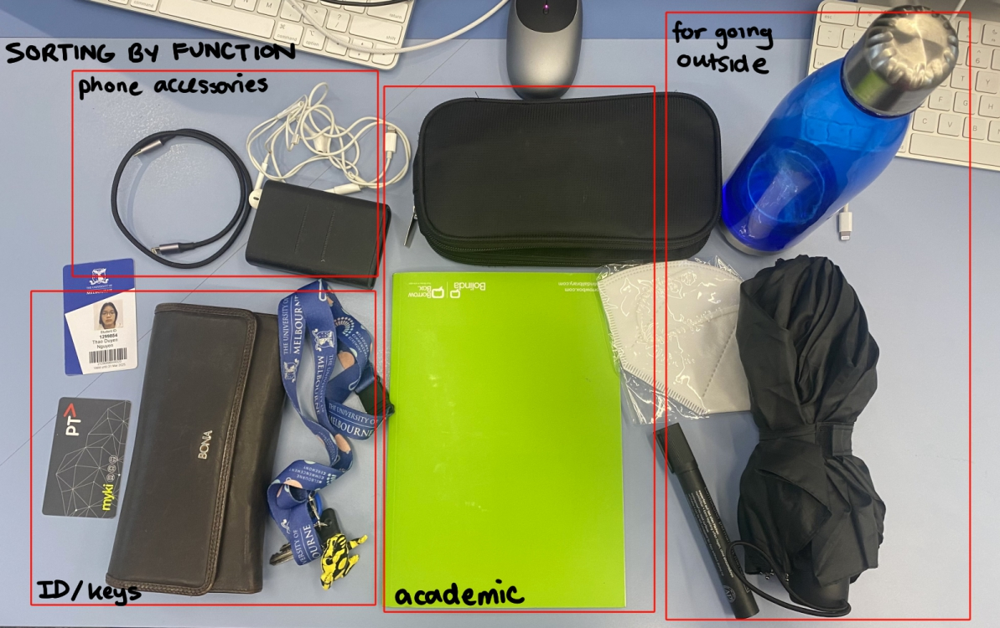
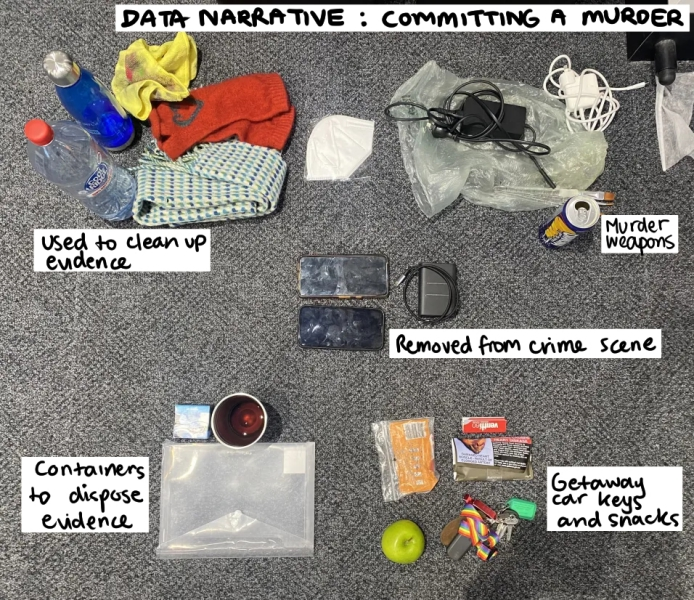

An exercise I did in this week's workshop was to sort data: in this case, the data was the contents of my backpack and other bags. I decided to sort them by functionality, which was how I would have instinctively sorted my belongings. Other ways I could have sorted them include colour, material, and monetary value.
I also practiced data sorting to form a narrative. Combining my belongings with that of a classmate's, we crafted a narrative where we had just murdered someone and had these items at our disposal, fitting them into our plan to clean up the evidence and escape police capture.
 Inspired by the Dear Data project,